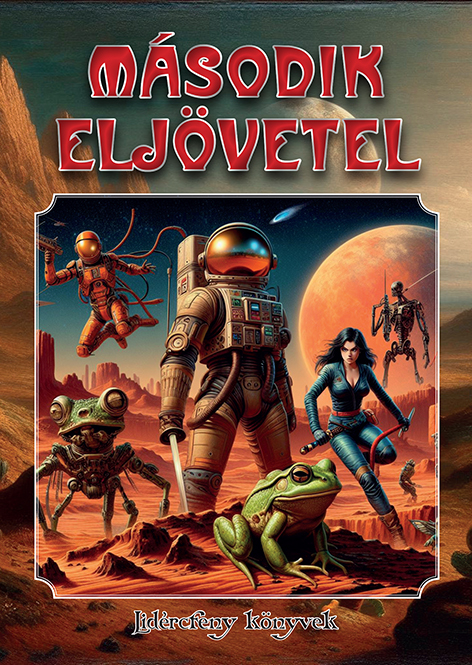
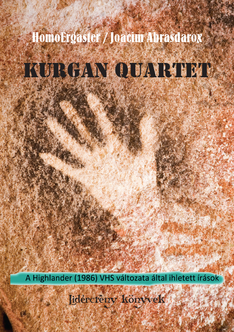
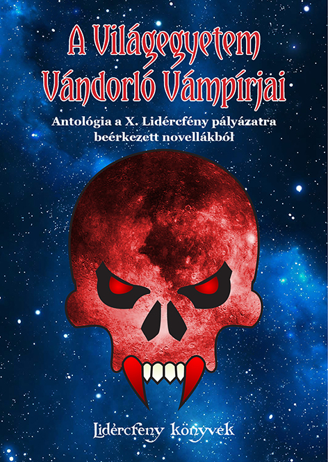
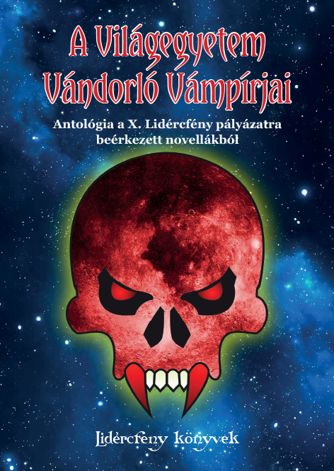
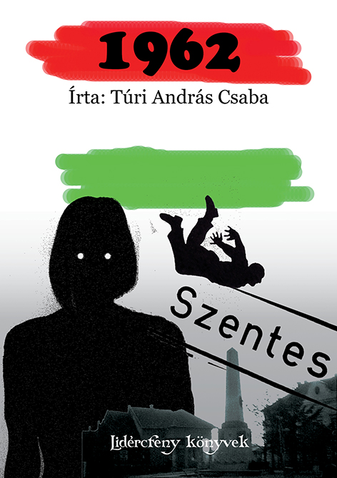
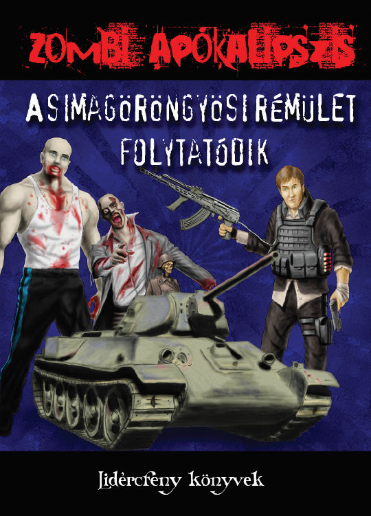

Második eljövetel
- PDF formátum, jó minőség, kb. 21 MB
- PDF formátum, jó minőség, dupla oldalas, kb. 21 MB
- PDF formátum, kb. 3 MB
- PDF formátum, dupla oldalas, kb. 3 MB
- EPUB formátum, kb. 8 MB
- EPUB formátum, kb. 7 MB

HomoErgaster / Joacim Abrasdarox - Kurgan Quartet
- PDF formátum, jó minőség, kb. 18 MB
- PDF formátum, jó minőség, dupla oldalas, kb. 18 MB
- PDF formátum, kb. 3 MB
- PDF formátum, dupla oldalas, kb. 3 MB
- EPUB formátum, kb. 10 MB
- EPUB formátum, kb. 10 MB

A Világegyetem vándorló vámpírjai, 1. kiadás

A Világegyetem vándorló vámpírjai, 2. kiadás
- PDF formátum, jó minőség, kb. 16 MB
- PDF formátum, jó minőség, dupla oldalas, kb. 16 MB
- PDF formátum, kb. 3 MB
- PDF formátum, dupla oldalas, kb. 3 MB
- EPUB formátum, kb. 10 MB
- EPUB formátum, kb. 10 MB

Túri András Csaba - 1962

Zombi apokalipszis, A simagöröngyösi rémület folytatódik
Zombi apokalipszis, A kezdet: Simagöröngyös